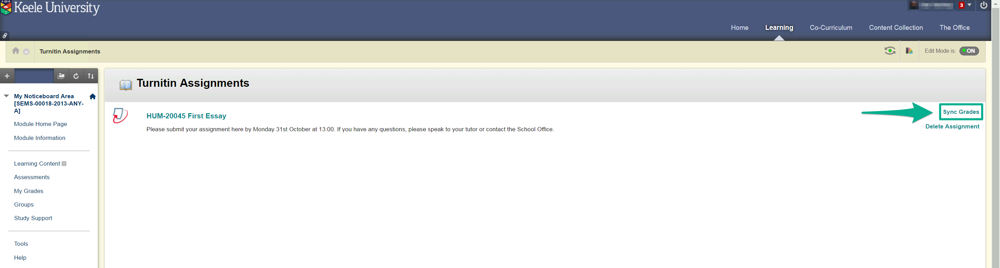

Using Sync Grades

In rare circumstances, you may notice discrepancies between the marks displayed in Turnitin and the KLE Grade Centre. Also, the 'Needs Grading' icon ( ) can occasionally fail to show within the Grade Centre after assignments have been submitted. Both are caused by an integration error between Turnitin and Blackboard and can be easily resolved.
) can occasionally fail to show within the Grade Centre after assignments have been submitted. Both are caused by an integration error between Turnitin and Blackboard and can be easily resolved.
To resolve this:
- Select the relevant KLE module.
- Under the Course Management section select Course Tools → Turnitin Assignments.
- From the assignments displayed, select the corresponding Sync Grades button.
- Confirm the changes made.